de.tud.stg.tigerseye.examples.trivalent will be created. In the context menu of the Project choose New > Other. Choose Tigerseye Language Definition in the Tigerseye folder.
The TigersEye Eclipse Plug-in is an IDE that strives to support easy creation of EDSLs. This guide describes how to install TigersEye for development, it shows the currently implemented features and showcases how to create and install a new language. TigersEye has been previously known as Popart, which has been developed by Yevgen Fanshil, Leonid Melnyk, Thorsten Peter, David Marx, Kamil Erhard and Tom Dinkelaker. The used examples are adjusted versions of their prior work.
This section describes the installation process for multiple use cases. One subsection describes the installation for the TigersEye plug-in for development. A further subsection describes the installation process of a language designed with TigersEye.
The plug-in itself consists of multiple separate plug-ins and has further dependencies to third party plug-ins and libraries. It uses classes and extensions from the Groovy Plug-in and Eclipse's JDT plug-ins, makes some use of different apache.commons libraries and uses further libraries to process code. The transformation is performed via the Earley Parser implementation parlex and the TigersEye builder. The builder is currently included in the core plug-in. The following table shows the necessary plug-ins and the required versions, if any.
| Plug-in name | Version | Description |
|---|---|---|
| de.tud.stg.tigerseye.eclipse.core | 0. 0. 1 | Core functionality. |
| de.tud.stg.tigerseye.eclipse.ui | 0. 0. 1 | User Interface functionality. |
| de.tud.stg.tigerseye.eclipse | 0. 0. 1 | Contains libraries and plug-ins used by multiple TigersEye plug-ins. |
| Groovy Eclipse Feature | 2.1.1 | Groovy Eclipse Plug-ins. |
| org.apache.commons.collections | - | Apache utility classes for collection handling. |
| org.apache.commons.io | - | Apache IO utility classes. |
| org.apache.commons.lang | - | Apache general language utility classes. |
| org.apache.log4j | [1.2 - 1.3) | Employed logging framework. |
| parlex | - | Earley parser, performs transformations. |
| slf4j-log4j12 | - | Employed logging facade with log4j binding. |
The next table lists further Eclipse projects relevant for the TigersEye development.
| Project name | Description |
|---|---|
| TigerseyeConfiguration | Contains configuration related data. |
| documentation | Contains documentation resources. |
To set up an Eclipse workspace in order to run the TigersEye IDE the following steps must be performed.
Once all plug-ins have been set up, TigersEye can be started using one of the predefined Tigerseye_IDE launch configurations. They are contained in the TigerseyeConfiguration plug-in and end with the operating system name they are defined for. In order to use them they first have to be renamed to a file ending with .launch. Alternatively a new Eclipse Plug-in configuration can be started with all available plug-ins active.
To install a newly created language it is currently necessary to export it as a plug-in. As in the Examples section described the project can be converted into a plug-in project using the Eclipse PDE tools. It is than necessary to add the de.tud.stg.tigerseye.eclipse and the de.tud.stg.tigerseye.eclipse.core plug-ins as dependencies. The core plug-in provides the dslLanguages extension point. This point has to be extended by declaring what the language class of the exported language is. Optionally a user friendly name and a default file extension can be defined.
Since the language definition will typically be a Groovy file, of which the PDE Builder is not aware of, the default behavior when exporting a plug-in has to be adjusted. Two different approaches can be taken.
Instead of a specific source folder, which would be compiled during an export using the PDE Export Wizard, the binaries created during the development have to be included, so that they are available on the classpath of the exported language. This can be done in different ways:
class files is bin, the bin folder can be added to the build.properties file as value for the build.includes property and the entry bin has to be added to the MANIFEST.MF file as Bundle-Classpath entry (the default classpath is the root of the created jar file).Alternatively the binary folder can be specified as source folder, in which case the MANIFEST.MF does not have to be modified. The resulting build.properties file will look something like this:
source.. = src/,\
bin/
bin.includes = META-INF/,\
.,\
plugin.xml
output.. = bin/
When the Groovy plug-in is installed, additional properties for the build.properties file can be used to tell the PDE to include Groovy files during an export. Simply add the following three lines to your build.properties file:
sourceFileExtensions=*.java, *.groovy
compilerAdapter=org.codehaus.groovy.eclipse.ant.GroovyCompilerAdapter
compilerAdapter.useLog=true
The resulting build.properties file will look similar to this:
source.. = src/
bin.includes = META-INF/,\
.,\
plugin.xml,\
output.. = bin/
sourceFileExtensions=*.java, *.groovy
compilerAdapter=org.codehaus.groovy.eclipse.ant.GroovyCompilerAdapter
compilerAdapter.useLog=true
The additional entries will cause a compilation of Java and Groovy files. For general information about valid values for the build.properties file check out the Eclipse Help following the path Plug-in Development Environment Guide > Reference > Build Configuration > Feature and Plug-in Build configuration. For more information about the Groovy specific build properties have a look at Andrew Eisenberg's Blog.
If the exported language uses libraries it has to be in an exported state when installed in the plug-ins folder. Doing that TigersEye can determin the necessary libraries and load them on the classpath.
This section showcases typical use cases for the TigersEye IDE.
The usage of the New Tigerseye Language Definition wizard will be explained by creating a Trivalent-DSL. A Trivalent logic DSL adds an unknown value U to the boolean values true T and false F. So that T&U is U and T|U is T and so on.
First create a new Java Project. This Project will contain the Trivalent language created by the New Tigerseye Language wizard. In this example a project called de.tud.stg.tigerseye.examples.trivalent will be created. In the context menu of the Project choose New > Other. Choose Tigerseye Language Definition in the Tigerseye folder.
Each language definition consists of a Groovy class that defines all operations, literals and structured elements of the DSL. Type TrivalentDSL as the class name, de.tud.stg.tigerseye.examples.trivalent as the package and select Next.
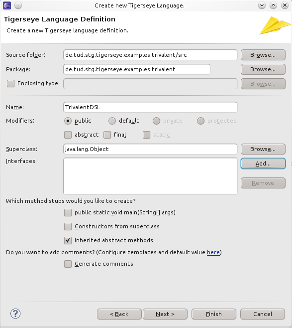
Now add three new literals: T (true), F (false) and U (unknown). Set the type for every literal to Trivalent.
When finishing the wizard these three classes and their super type Trivalent will be created. Notice that T, F and U extend Trivalent. The only operation will be an enhanced println which takes a String and a Trivalent expression and prints both. For example
puts("T|U: ",T|U)
produces
T|U: T
The return type will be void so we leave the Return type: field empty. For each operation you can choose if setting a breakpoint on a line containing this keyword should be possible. You can define parameters and their types in the Parameter: section. Parameters are added by clicking on the + button.
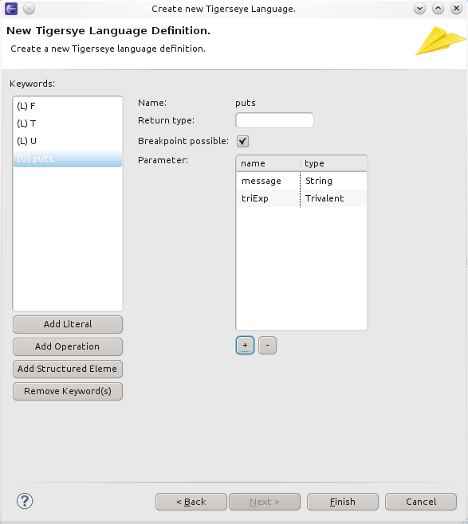
Now add a repeat-statement. The following will simply print T: T ten times to standard out.
repeat(10) {
puts("T: ",T);
}
The return type will be void and there is one parameter named n. Select explicit parameters.
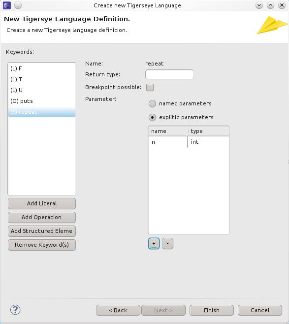
Again, you can choose if it should be possible to set a breakpoint on a line containing this keyword. After you select Finish a dialog will pop up asking you if you want to add the TigersEye runtime libraries.
Usually you should say yes, since language definitions have dependencies to the runtime libraries. The next figure shows the generated classes and project structure.
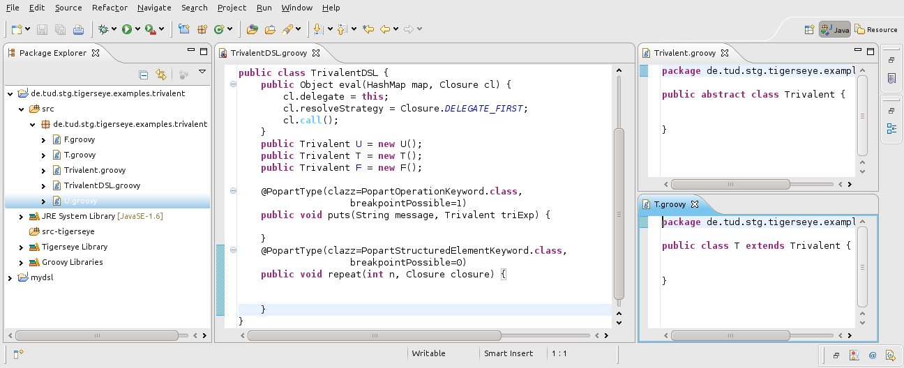
For the new type Trivalent as well as for the literals T,U and F a separate Groovy class has been created. The language configuration is defined in the TrivalentDSL class.
This section shows how to deploy a TigersEye language to a plug-in project. This plug-in project will declare its dependencies to two plug-ins:
The de.tud.stg.tigerseye plug-in provides the dependent on runtime libraries and the de.tud.stg.tigerseye.eclipse.core plug-in the extension which declares that this plug-in project actually provides a new language. The following steps have to be performed:
Convert the language definition project to a plug-in project.
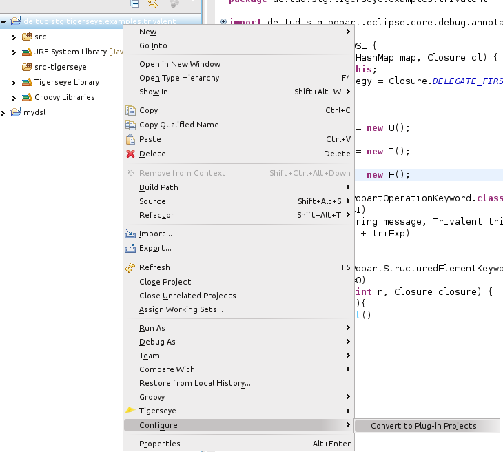
In the MANIFEST.MF file add the dependencies to the two Tigerseye plug-ins.

Now open the plugin.xml and go the Extensions tab. Add the de.tud.stg.tigerseye.dslDefinitions extension point. On the extension point select New > language. There you can define the language class to be used. In this example de.tud.stg.tigerseye.examples.trivalent.Trivalent is used. Additionally you should define a user friendly name of your new language, e.g. Trivalent DSL. Optionally you can define the default extension identifying your language, such as tri. The following figure shows the configuration.
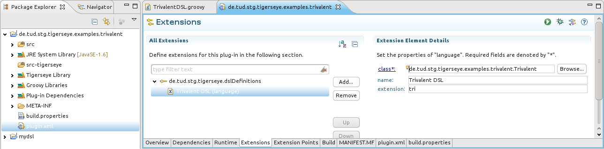 The extension field can later also be configured via the preference pages.
Currently only the deployment for development is supported. A language can either be copied or linked inside the eclipse instance in which the plug-in is developed. The next time the Eclipse instance is started the language will be visible in the preference pages and can be used.
The current version of TigersEye provides the fundamental functionalities in order to be able to use it as a language workbench. New languages can easily be created and deployed. After a restart they can be used in projects that have the TigersEye nature. A TigersEye nature can easily be added and removed via the context menu. The installed DSLs can be configured through the preference pages, as well as the employed transformations. The editor is an extended version of the Groovy editor and provides keyword coloring for keywords of installed and activated DSLs.
The preference pages are an important part of TigersEye, since they provide the configuration of registered DSLs. In the main prefrence page
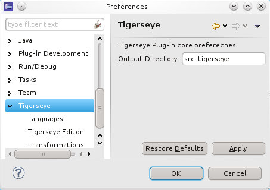
the output source folder can be adjusted. Registered languages can be configured on the languages preference page.
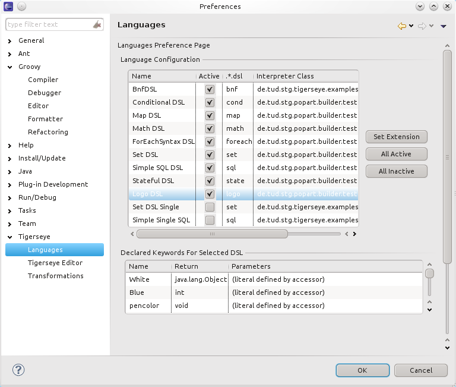
DSLs have to be set into activated state in order to use them. The extensions, that indicate which concrete DSL class is responsible for which files of the according extension can be adjusted in the Extensions column. When a DSL is selected its keywords are shown below in the Declared Keywords of Selected DSL table.
In the transformations preference page used transformations can be configured. A transformation usually only supports a subset of available resources. Its active state for each resource can be modified.
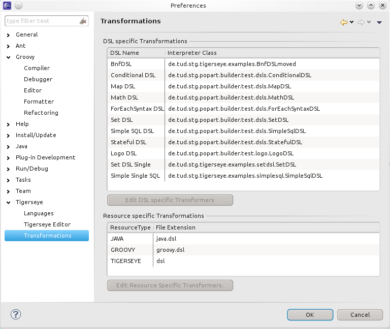
For each resource and DSL different transformations might be available and active. These can be configured using the Select Transformations dialog.
The dialog also shows additional informations about the currently selected transformation in a tray window that can be opened clicking on the additinal information button.
The editor provides keyword coloring for active DSLs. The colors can be configured using the Tigerseye Editor preference page, where every DSL can be configured separately and the general keyword coloring can be activated or deactivated.
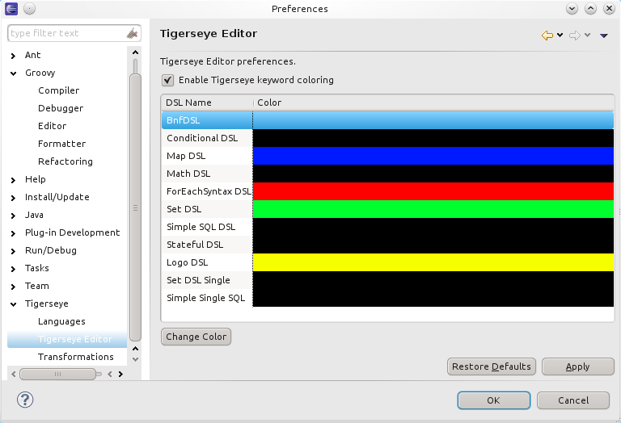
TigersEye has additional requirements which will be imported when adding the TigersEye nature to a project. The project must have at least the Java nature otherwise the transformation to a TigersEye project is not possible. Following figure shows the available context menu to add the nature to a project.
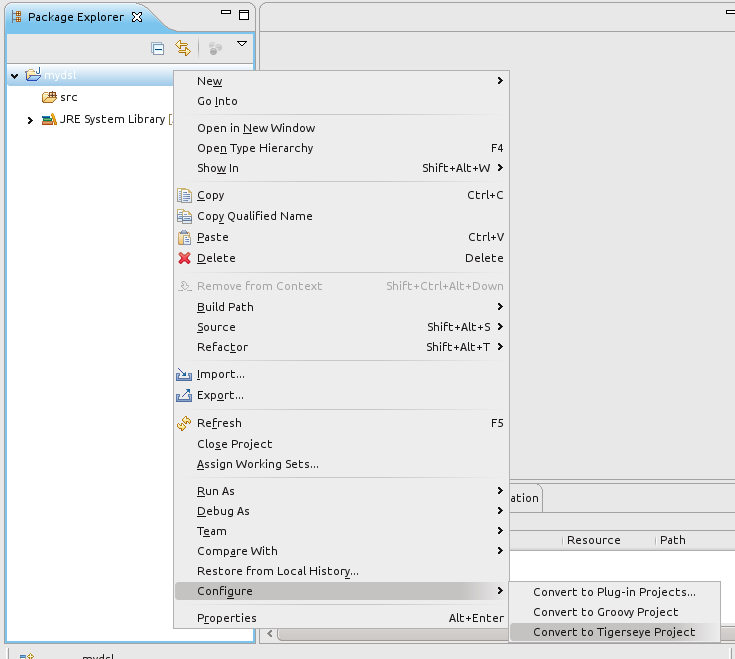
This will do two things:
A seperate source folder will be created into which the translated DSL files will be put (here: src-tigerseye).
de.tud.stg.tigerseye.examples.LogoDSL and de.tud.stg.tigerseye.examples.DSLDefinitions. Additionally the GroovyNature will be added if not already configured.Following figure shows a possible resulting configuration.
Removing a TigersEye nature can also be accomplished via the context menu of a TigersEye project.
A new language can be created using the Tigerseye Language Wizard. The Wizard can be accessed via File > New > Other
The next figure shows the first page of the Wizard.
There the name of the main language class can be defined. As shown the default package is not a valid package for a language definition, since this will cause problems when trying to use the language within a Java class. The next figure shows the actual language definition page.
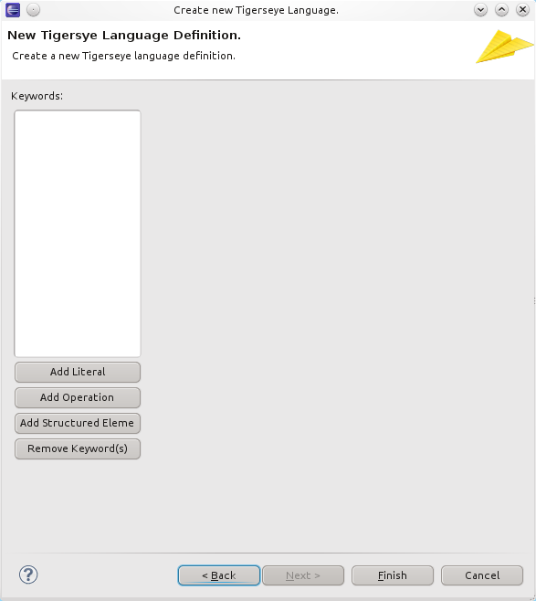
On the language definition page the different literals, operations and structured elements can be added. In Section Examples the usage of the wizard is showcased.
The New Tigerseye Class Wizard enables easy creation of new DSL classes.
It is basically a version of the Groovy Class Wizard. Not all modifiable areas have influence on the generated code. The useful fields for generation are Source folder, Package, Name and the DSL extension.
A DSL can be launched using a launch shortcut or via the Run Configurations dialog. The next figure shows a launch using a launch shortcut.
The following figure shows the launch via the Run Configurations Dialog.
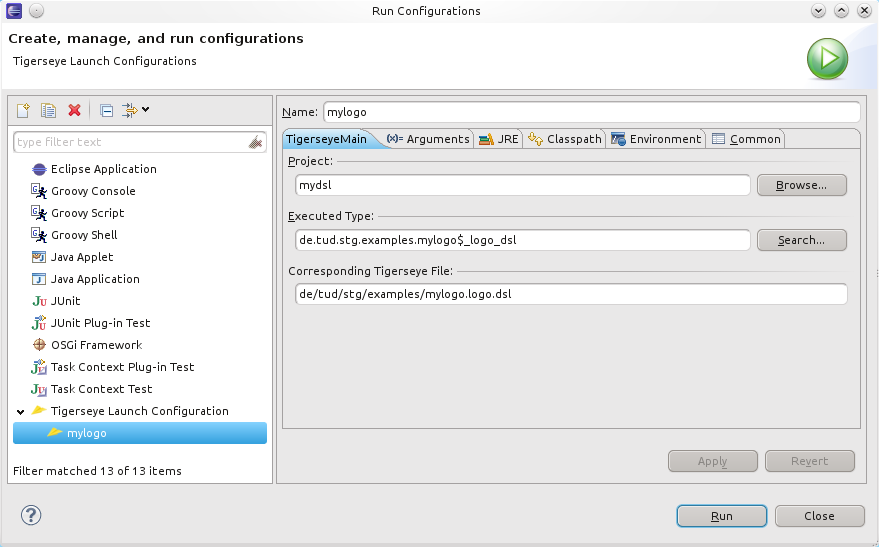
In the Run Configurations Dialog a new launch can be configured or a previous launch adjusted. On the Tigerseye tab the project from which a DSL will be launched as well as the DSL file to launch can be chosen. When using the launch shortcut the Groovy default launch configuration is assumed, which will set additional classpath properties. Later these can be modified using this dialog.